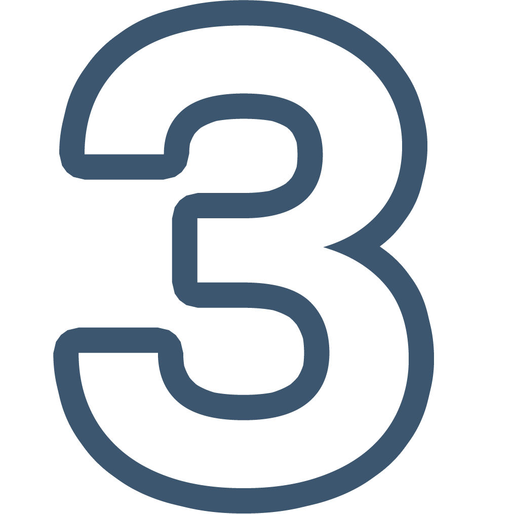
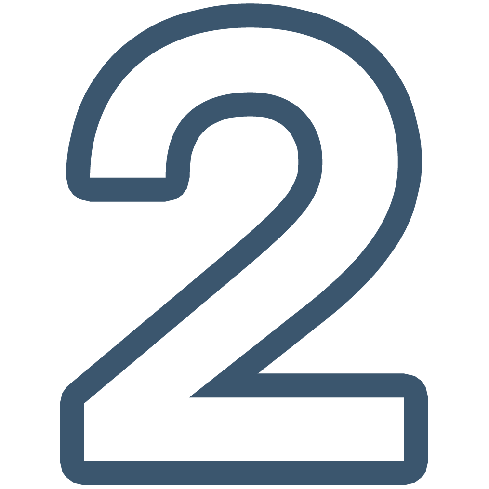

Подпрограмма “Соотечественники”
Для участия в подпрограмме соотечественник должен находиться в трудоспособном возрасте, обладать дееспособностью и соответствовать требования Государственной подпрограммы “Соотечественники”, а также не менее олному из следующих требований:
- иметь документы о профессиональном образовании и (или) о квалификации либо справку образовательной организации, подтверждающую обучение в профессиональных образовательных организациях или образовательных организациях высшего образования (для обучающихся в профессиональных образовательных организациях или образовательных организациях высшего образования);
- иметь непрерывный трудовой стаж за последние полгода либо опыт работы не менее одного года до подачи заявления об участии в Государственной программе «Соотечественники» (кроме лиц, подавших заявление об участии в Государственной программе «Соотечественники» в течение первого года после завершения обучения в образовательных организациях высшего образования и профессиональных образовательных организациях);
- осуществлять предпринимательскую деятельность и иметь опыт предпринимательской деятельности на территории Республики Башкортостан не менее полугода до подачи заявления об участии в Государственной программе «Соотечественники».
Этапы
Представление заявления и документов соотечественников в Представительсво МВД за зарубежом (проживающим за рубежом) или в МВД по РБ (проживающим в РФ)
 Направление заявления в Министерство семьи и труда Республики Башкортостан
Направление МВД по Республике Башкортостан соотечественнику уведомления об участии/отказе в участии в Госпрограмме (при положительном решении) свидетельства участника Госпрограммы
Выдача сведетельство участника Госпрограммы (при положительном решении)
 Регистрация заявления об участии в Госпрограмме
Рассмотрение заявления рабочей группой по реализации Госпрограммы, направление решения в МВД по Республике Башкортостан
Оформление (60 календарных дней с даты подачи заявления)
Сумма компенсации
Сумма частичной компенсации расходов участнику Государственной программы определяется фактически понесенными затратами, но не может превышать для участников Государственной программы 43,8 тыс. рублей, для членов семьи - 25,3 тыс. рублей, из них:
- на жилищное обустройство для: участника Государственной программы - до 35,0 тыс. рублей; члена семьи - до 23,0 тыс. рублей;
- на медицинское освидетельствование для участника Государственной программы и члена семьи - до 2,3 тыс. рублей;
- на признание ученых степеней, ученых званий, образования и (или) квалификаций, полученных в иностранном государстве, для участника Государственной программы - 6,5 тыс. рублей.